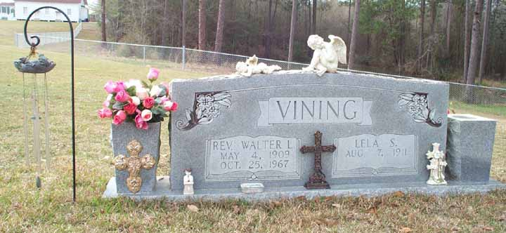

Documentation for Walter Laffette Vining - Lela Spivey
Death Data
Headstone for Walter Laffette Vining and Lela (Spivey) Vining, in Tanner Baptist Church Cemetery, Douglas, Georgia:

Note: Lela (Spivey) Vining is buried in City Cemetery, Douglas, Coffee County, Georgia, beside Ernest Holton, her second husband.